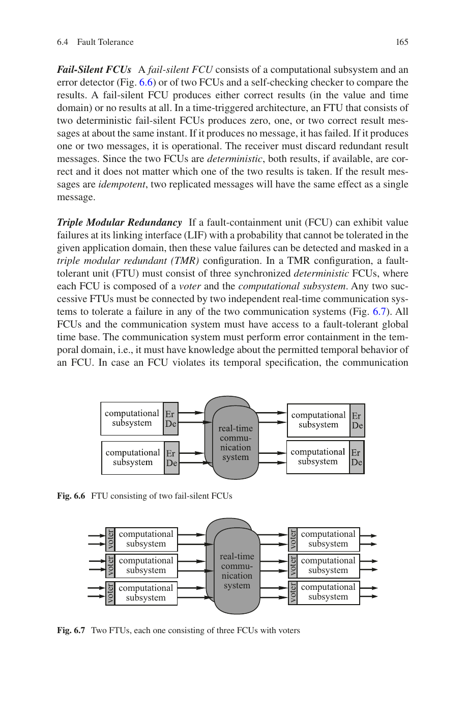
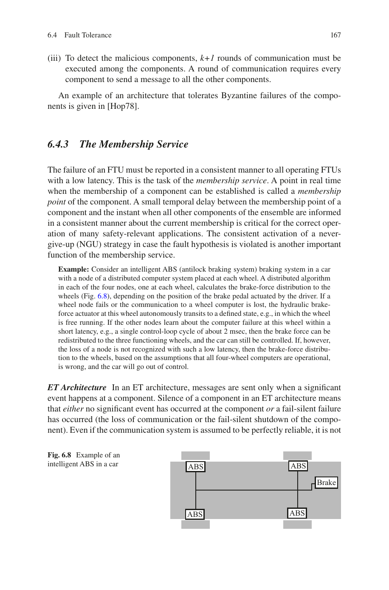
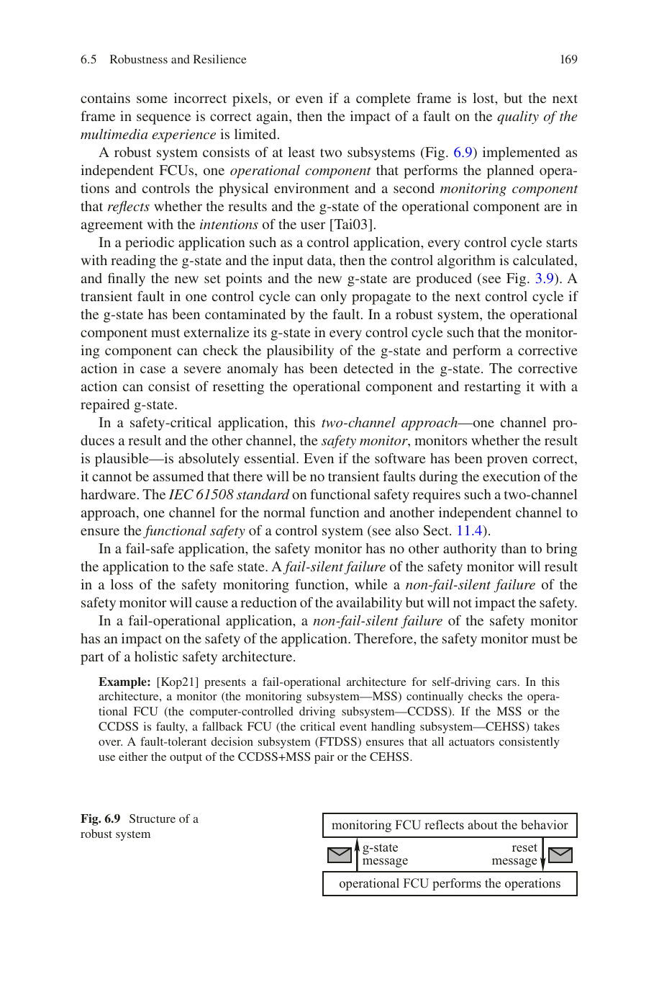
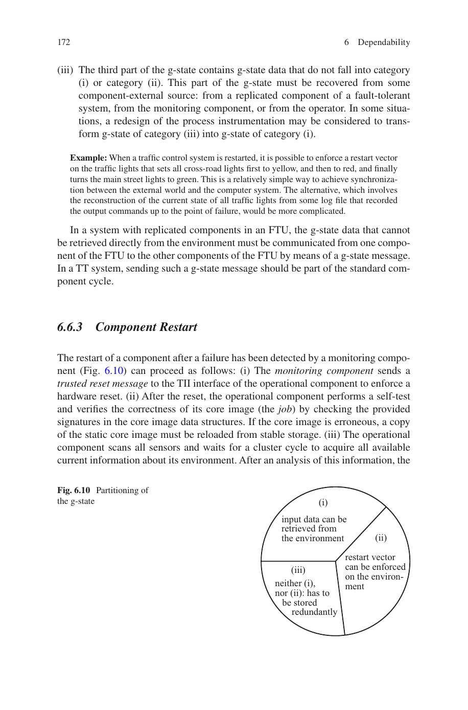

第7章 实时通信
Real-Time Systems — Hermann Kopetz, Wilfried Steiner 著 | AI 辅助翻译

本章概述
许多实时系统是分布式计算机系统。因此，它们需要一个实时通信子系统来确保可靠且及时的消息交换，使分布式计算机系统能够作为一个协调的整体运行。我们称实时通信子系统为实时网络。实时网络与常见 IT 基础设施中的通信网络根本不同。它必须确保及时的消息交付，而这是 IT 网络所不要求的。过去，许多不同的实时网络被设计和部署。通常，特定的实时网络高度专用于特定行业，仅针对利基市场。然而，随着标准化的推进，越来越多的行业转向仅少数几种解决方案，并且这种标准解决方案的采用过程仍在持续。虽然基于标准 Ethernet 的实时网络已经使用了一段时间，但直到最近，关键的实时功能才被时间敏感网络（TSN）任务组纳入 IEEE 802.1 标准集。然而，尽管当今的 Ethernet 适合作为许多行业的实时网络，但要达到与办公设备相当的市场主导地位和互操作性，仍有很长的路要走。
我们从实时网络的定义开始本章，并讨论其典型需求，及时性是最重要的需求。虽然存在许多不同的实时网络，但它们共享共同的设计原则。我们基于一个简单模型来讨论这些原则，该模型将实时网络解释为用于消息交换的一组资源。我们的简单模型区分三种类型的消息：事件触发、速率约束和时间触发，一个实时网络可以支持其中一种或多种消息类型。我们还提及一般设计限制和陷阱。本章的其余部分对每种消息类型使用一节，首先讨论一般方面，然后介绍具体例子。对于事件触发消息，我们讨论基本 Ethernet 和 CAN。接下来，航空电子全双工交换 Ethernet（AFDX）和音频/视频桥接（AVB）展示速率约束消息。最后，我们讨论时间触发协议（TTP）、时间触发 Ethernet（TTEthernet）和时间敏感网络（TSN），作为支持时间触发消息的实时网络示例。
7.1 需求
现代实时系统通常实现一个分布式计算机系统，其中实时网络互连空间上分布的节点。实时网络在以下情况下是必要的：
(i) 实时系统本质上是分布式的，例如工厂车间的工业自动化、能源生产工厂、火车、大型飞机。
(ii) 需要将实时系统划分为几乎独立的故障遏制单元以提供容错，例如航天器、汽车。
(iii) 实时系统的处理需求超过单个节点的处理能力，例如自动驾驶汽车。
(iv) 实时系统的仪表接口无法由单个节点单独实现。例如，在工业机器人的情况下，将所有传感器和执行器直接连接到单个处理节点是不切实际的。
实时网络执行实时系统定义的所有分布式节点之间的实时通信，并可能使用异构技术和范式。实时网络还包括节点处的发送和接收子系统。实时网络必须保持前几章中阐述的实时数据的属性。因此，实时网络必须满足与非实时通信服务有很大不同的架构需求。
7.1.1 及时性
实时网络最重要的需求是具有有限消息传输抖动的有保证的消息传输延迟。
有保证的消息传输延迟 一个网络是实时网络，当且仅当可以通过分析确定时间关键消息的最坏情况消息传输延迟的界，并且该界在运行期间以足够高的概率成立。在硬实时系统中，所述概率趋向于事实上保证的要求。例如，超高可靠系统（如飞机）的常见可靠性要求规定故障率需达到 10⁻⁹ 次/小时。正是这种保证是常见 IT 网络技术无法满足的。另一方面，延迟的目标值及其界由特定实时应用的需求决定。因此，也由具体的实时应用决定某种特定的网络技术是否适合作为实时网络。在许多实时系统中，最小化最坏情况消息传输延迟将直接带来系统层面的质量提升。例如，如果实时系统实现一个实时事务（见第 1.7.3 节），该事务从获取传感器值开始，以向执行器提供输出终止，则最小化消息传输延迟将缩短实时系统控制回路的响应时间，从而改善控制稳定性和控制质量。

有限的消息传输抖动 抖动是最坏情况与最好情况消息传输延迟之间的差值。大的抖动对动作延迟的持续时间（见第 5.5.1 节）和时钟同步精度（见第 3.1.3 节）有负面影响。
时间测量服务 实时镜像（见第 5.4 节）在使用时刻（见第 5.4 节）必须是时间准确的，使用实时镜像的节点必须能够检查其时间准确性。因此，实时网络必须支持分布式时间测量，因为在分布式计算机系统中，对实时实体的观测和对其关联的实时镜像的使用通常发生在不同的节点上。实现时钟同步协议（例如 IEEE 1588）的实时网络可以使用时间戳来实现时间测量服务。时钟同步协议所需的质量（精度、容差/对故障和攻击的鲁棒性）由实时系统的需求决定。
7.1.2 可靠性与安全性
通信可靠性 传输中的消息可能在时域和值域丢失或损坏。因此，实时网络通常实现冗余机制。丢失的消息通过空间冗余（即沿不相交的通信路径传输）或时间冗余（即顺序消息重传）来补偿。在受益于低消息传输延迟的实时系统中，空间冗余更可取，因为消息的冗余副本可以并行传输。损坏的消息通常通过消息本身内部的数据冗余来解决。提高消息完整性的数据冗余技术包括错误检测码和错误纠正码、时间戳和序列号。我们将通信可靠性定义为在应用所有已实现的消息传输冗余机制后，实时网络成功传输消息的概率。
故障遏制 当多个节点使用相同的网络资源（例如它们通过同一物理总线连接或共享同一网络交换机）时，实时网络必须实现流量监管方法。否则，故障节点可能超出其指定配额使用资源，限制非故障节点使用该资源。流量监管方法可以在实时网络的边界实现，作为分布式节点本身的一部分，称为源头故障遏制。在这种情况下，节点本地的独立组件监控该节点的通信行为，并在该行为偏离其规范时进行干预。例如，它可以关闭整个节点。另一方面，流量监管通常在实时网络内部实现，例如在网络交换机中。一种常见的流量监管方法（在源头和网络中均适用）是漏桶算法，该算法只允许一个节点在指定的区间内传输指定数量的数据。
消息完整性与机密性 虽然消息完整性对通信可靠性至关重要，但过去实时系统很少要求实时消息的机密性。然而，必须重新考虑实时消息的机密性，因为随着实时系统越来越多地连接到 IT 网络甚至互联网，新的攻击变得可能。虽然单条实时消息的信息内容的货币价值可能有限，但随着多个不同消息的整合，这种价值会成倍增加。例如，整合工业生产工厂中的实时消息的攻击者可能学到过程自动化中的机密程序。因此，安全架构可能要求在实时网络的敏感部分使用网络级密码学。使用分组密码的协议如 MACsec（IEEE 802.1AE）可能是实时系统的良好匹配，因为它们可以引起可接受的额外消息传输延迟。
配置完整性 随着我们构建越来越复杂的实时系统，其实时网络的复杂性也随之增加。这种复杂性也反映在不断增长的实时网络配置空间中。实时网络的配置完整性在面临故障和攻击时也必须得到保护。特别地，只有经过成功认证的可信实体才能重新配置实时网络。

7.1.3 灵活性
实时系统可能固有地需要添加和删除节点甚至整个子系统的能力，例如在生产车间中添加和移除机器（即插即产）、在系统运行期间更换节点的维护程序，或航天器与空间站的对接。此外，实时系统的需求可能随时间变化，导致硬件/软件更新。
变化的通信需求 实时网络可以支持通信需求中的有意变化，但必须维护来自不受此变化影响的分布式应用的实时消息的最坏情况消息传输延迟。当然，只有在不超过物理或技术限制（例如总通信带宽不能被超过）的情况下，变化才能被支持。通信变化也可能需要重新配置未受影响的应用的消息传输。这取决于具体的实时系统，这种变化是允许在系统运行期间进行，还是只能在系统维护阶段进行，或者根本不允许。
网络工程 vs. 即插即用 不同的实时网络在响应变化的通信需求时提供不同程度的自动化重配置。网络工程是指手动或计算机辅助生成新的通信配置。另一方面，即插即用是实时网络在不需人工交互的情况下适应通信需求变化的能力。虽然像 AVB（IEEE 802.1 音频/视频桥接）这样的实时网络提供即插即用，但将其用于安全关键系统中是一种风险。
7.1.4 通信带宽与成本效率
通信带宽 实时镜像所需的通信带宽由其大小和最大更新频率决定。这种所需的带宽可能因实时实体类型和用例而差异巨大，例如从 10 Hz 的室温传感器的几 bit/s 到自动驾驶汽车的超高清摄像头的数 Gbit/s。
缩写 SWaP-C 代表的系统方面是：尺寸（Size）、重量（Weight）、功耗（Power）和成本（Cost）。虽然功耗和成本在基本上每个实时系统中都是重要因素，但重量和尺寸在汽车、飞机或航天器等移动实时系统中尤其关键。
成本效率 实时网络必须成本有效地满足本章讨论的需求。实时系统中存在跨行业的融合网络趋势：单一同构网络技术服务于实时系统中的多个（如果不是全部）分布式应用。融合网络通常提高网络利用率，因此也提高成本效率。IEEE 802.1 时间敏感网络（IEEE 802.1 TSN）是一种用于融合网络的实时网络技术（见第 7.5.3 节）。
7.2 设计原则与陷阱
实现实时网络有很多不同的方法，但底层设计原则的数量相当有限。根据第 2 章的讨论，这些设计原则作为一个简单模型，捕获所有系统层面相关的通信方面。在这个简单模型中，我们将实时网络视为一组抽象资源和一个基本消息传输服务（BMTS），该服务通过或多或少协调地使用所述资源，将消息从发送组件传输到一个或多个接收组件。BMTS 因其支持的消息类型而不同（见第 7.2.2 节）。在 BMTS 之上，可以实现更高层协议（见第 14.4.2 节）。
7.2.1 实时网络模型
在简单模型中，实时网络是一组资源，一次只能有一个发送方使用一个资源。
个体资源 对于每个个体资源，实时系统中只有一个发送方。资源例如是发送方与接收方之间的直接通信链路。
共享资源 多个发送方共享该资源。资源例如是物理总线、网络集线器或网络交换机中的消息缓冲区。
示例——交换 Ethernet 中的资源：节点通过双向通信链路连接到 Ethernet 交换机。链路中从发送方到交换机的单向部分是一个个体资源。所有其他通信链路和网络交换机中的消息缓冲区均为共享资源。
7.2.2 消息类型
节点通过交换消息来使用资源，我们可以区分以下消息类型。
事件触发消息 发送方在重要事件发生时产生消息。这些事件可能在实时系统的控制域之外，因此无法确定消息之间的最小时间。因此，所有发送方的总消息数可能达到或超过实时网络的资源容量，导致长的消息传输延迟甚至消息丢失。实时网络无法为事件触发消息的消息传输延迟提供时间保证。
速率约束消息 发送方产生消息并保证不超过预先定义的最大消息速率。基于消息速率的总和，实时网络可以相应地确定其资源的容量，并且可以离线计算最坏情况消息传输延迟的界。然而，消息传输抖动可能很高，因为来自不同发送方的速率约束消息可能稀疏地或以突发形式到达。
时间触发消息 发送方在同步全局时间中的预先定义的时刻产生消息。来自不同发送方的这些时间点可以协调，使实时网络能够确定其资源容量。与速率约束消息相比，实时网络可以通过这种协调来最小化其资源。实时网络还可以预先定义临时缓冲和转发时间触发消息的时间点，以及最终接收节点的接收时间点。因此，消息传输抖动可以减少到同步全局时间的精度。
从任意给定输入产生速率约束消息或时间触发消息的行为称为流量整形。
7.2.3 流量控制
前述消息类型是基于发送方行为定义的，但在任何通信场景中，接收方和网络的有限资源容量决定了最大通信速度。因此，流量控制涉及控制一个或多个发送方与接收方（或网络——在这种情况下，有时使用术语拥塞控制）之间信息流的速度，使得接收方（或网络）能够跟上发送方的速度。虽然速率约束和时间触发消息的先验信息允许隐式流量控制，但事件触发消息的流量控制需要显式的流量控制机制。

显式流量控制 当一个发送方或多个发送方试图超过网络或接收方的资源容量时，消息将丢失。显式流量控制机制通过向所有或部分发送方发出信号，暂停和恢复其消息传输，来防止这些情况。显式流量控制也称为背压流量控制。
示例——Ethernet 暂停命令：当 Ethernet 网络中接收节点（或交换机）的接收缓冲区超过给定的阈值时，接收节点向发送方发送一个 Ethernet 暂停消息，要求在定义的持续时间内暂停消息传输。此外，带有 VLAN 标签的 Ethernet 帧区分八种优先级。数据中心桥接也在暂停消息中使用这些优先级，可以有选择地仅暂停特定优先级的 Ethernet 帧的传输。
显式流量控制并不总是需要交换专用消息，也可以通过网络访问协议来建立。
示例——CAN：在 CAN 系统中，如果其他发送方的传输正在进行中，节点不能访问总线，即发送方的访问协议对打算发送消息的节点施加背压。
隐式流量控制 实时网络使用模式的先验知识固有地排除了接收方和网络中的过载场景。因此，流量控制也是预先建立的。实时网络可以实现流量监管机制，确保即使是故障发送方也不会违反所述使用模式，而是遵守其最坏情况的资源使用配额。
从复杂度的角度看，显式流量控制引入了接收方对发送方的控制。因此，故障接收方可能影响正确的发送方。隐式流量控制中发送方和接收方之间的接口是单向的，而显式流量控制中这个接口是双向的——因此更复杂。
7.2.4 设计限制
任何物理通信通道都由其带宽和传播延迟来表征。带宽表示在单位时间内可以通过通道的比特数。通道的长度和波（电磁波、光波）在通道内的传输速度决定传播延迟，即单个比特从通道一端传输到另一端所需的时间。由于波在电缆中的传输速度大约是真空中光速（约 300,000 km/s）的 2/3，信号要通过 1 km 长的电缆大约需要 5 μs。术语通道的比特长度表示在一个传播延迟内可以驻留在通道中的比特数。
示例：如果通道带宽为 100 Mbit/s，通道长度为 200 m，则通道的比特长度为 100 比特，因为该通道的传播延迟为 1 μs。
7.2.4.1 基于总线的实时网络
在总线中，一次只能有一个节点发送消息。否则多个消息的信号会发生冲突，在总线上引起干扰。这种干扰将导致消息丢失，在某些情况下甚至是不对称的消息丢失：一些节点正确接收到消息，而其他节点不会。存在两种类型的媒体访问协议：冲突检测协议在发生消息冲突时检测并解决冲突，冲突避免协议防止冲突的发生。两种协议类型都要求节点感知总线并区分总线活跃和总线空闲阶段。总线空闲阶段的最小持续时间等于传播延迟，因为只有到那时所有节点才能可靠地感知总线空闲。从这个总线空闲的下界可以得出物理总线中的数据效率，作为其消息长度 m 和比特长度 bl 的函数：
$$ data\_efficiency = m / (m + bl) $$
示例：考虑一个 1 km 的总线，带宽为 100 Mbit/s，消息长度为 100 比特。由此得出通道的比特长度为 500 比特，数据效率为 16.6%。
一般来说，在长总线和具有高带宽的总线中发送短消息将是浪费的。例如，如果消息长度小于通道的比特长度，则数据效率将低于 50%。
7.2.4.2 基于交换的实时网络
在交换网络中，节点连接到交换机，交换机在发送和接收节点之间的通信路径中充当中继站。所有连接都是双向点对点的，位于节点与交换机之间或两个交换机之间。因此，这些连接不需要媒体访问协议。然而，在交换网络中，数据效率方程中的比特长度参数被一个技术依赖的帧间间隙参数所取代。接收方使用帧间间隙重新与发送方同步。
示例：在 1 Gbit/s Ethernet 中，发送节点在帧间间隙中传输 96 比特的空闲符号。Ethernet 消息（第 1 层 Ethernet 数据包）长度在 72 到 1530 个八位字节之间。因此，点对点的 1 Gbit/s Ethernet 链路的数据效率在 86% 到 99% 之间。
在基于总线的网络中，共享资源是物理总线；而在交换网络中，共享资源是交换机内部的消息缓冲区及其管理功能。这些消息缓冲区可以以两种模式使用：存储转发模式，即交换机在转发之前完整接收消息；直通模式，即交换机在完全接收消息之前就开始转发消息。技术延迟表示假设该消息的转发队列为空，并且已接收到足够的部分消息以开始传输后，交换机开始转发消息所需的最小时间。
示例：TTE-Switch Controller Space 是一个存储转发交换机，支持最高 1 Gbit/s 的带宽，技术延迟约为 10 μs。
在存储转发模式下，从发送节点到接收节点的消息的最好消息传输延迟的下界由点对点链路上的消息传输延迟与通信路径中交换机的技术延迟之和给出。最坏情况消息传输延迟的上界还需要考虑用于建立消息类型的特定流量整形方法，以及由于并发消息接收在交换机中导致的排队延迟。直通模式显著降低了最好情况和最坏情况的消息传输延迟，因为 (i) 交换机只需要接收部分消息就可以开始转发传输，(ii) 消息在通信路径中多个点对点链路上的传输可能重叠。
7.2.4.3 无线实时网络
无线实时网络在实时系统中也很常见。无线协议类似于物理总线中使用的协议。然而，由于缺少有线传输介质，它们易受噪声、信号反射、衰减和阴影的影响，其通信可靠性通常远低于有线解决方案。尽管如此，仍存在许多低关键性的无线通信用例和无线解决方案，它们实现了上述一种或多种消息类型。此外，一些无线协议调度通信时间和频率，例如 IEEE 802.15.4 时隙通道跳频。
7.2.5 设计陷阱
7.2.5.1 子系统范围的误解
子系统范围 实时网络只是整个实时系统的一个子系统。因此，理解其子系统范围至关重要。实时网络技术必须实现前面讨论的需求，但可能提供远超于此的服务。更高层网络服务的例子包括组成员资格或文件传输协议。子系统范围可能包括这些服务。另一方面，实时系统将实现明显超出子系统范围的机制。例如，监控消息接收是否对被控对象产生了物理影响，这超出了通信子系统的范围。关于哪些功能应包含在通信系统中、哪些不应包含的研究问题（通常也适用于实时网络）最初由 Saltzer 等人[Sal84]提出。
示例——三里岛事故：对实时网络子系统范围的误解可能产生严重后果，正如以下关于 1979 年 3 月 28 日三里岛 2 号核反应堆事故的引文[Sev81, p. 414]所述："在这次事故相对较长的一连串故障中，也许是最重要和最具破坏性的单个故障是稳压器上的压力操作释放阀（PORV）故障。PORV 没有关闭；然而其监控灯却亮着绿色（表示已关闭）。在这个系统中，一条基本的设计原则——永远不要信任执行器——被违反了。设计者假设，命令阀门关闭的控制输出信号的已确认到达意味着阀门已关闭。由于阀门存在机电故障，这个推断并不成立。一个正确的系统设计应使用独立的子系统来机械感知阀门的关闭位置，这将避免这一灾难性的错误信息。"
7.2.5.2 不兼容的网络服务
在协议组合下设计单个网络协议以达期望的涌现行为通常是非平凡的且容易出错的。
示例——冗余管理与端到端协议：IEEE 802.1CB（IEEE 802.1 TSN 协议集的一部分）和 ARINC 664-p7 定义了接收方消除通过实时网络中不相交路径发送的消息冗余副本的方法。这些协议的意图是仅转发其中一个副本以供进一步处理，以减轻接收处理器的负担。端到端协议（如应用级 CRC）旨在防止网络中的故障——故障 Ethernet 交换机可以修改消息的内容并生成正确的 Ethernet 级 CRC（交换机实现此功能）。然而，它生成应用级 CRC 的概率要低得多，可以忽略不计。IEEE 802.1CB 和 ARINC 664-p7 的冗余管理与端到端协议不兼容。故障网络交换机可能损坏应用级 CRC 中的消息，导致该消息在冗余管理中仍然看起来是正确的（因为交换机知道如何生成正确的 Ethernet CRC），并被冗余管理选择作为要转发的副本。应用将检测到消息损坏，但不会收到其他（正确的）副本，因为冗余管理会将它们消除。
7.2.5.3 为平均情况而非最坏情况设计
为平均情况而非最坏情况设计的网络将无法满足实时网络的及时性需求。平均情况设计的一个示例效果是颠簸（thrashing）。
颠簸 在理想系统中，只要还有空闲资源容量，不断增长的共享资源需求都将得到服务。实际上，管理资源到需求分配的仲裁方案可能导致仲裁开销，阻止资源得到充分利用。一些仲裁方案会出现颠簸：当需求超过某个水平——称为颠簸点——时，其仲裁开销迅速增长，导致资源利用率甚至低于较低需求时。例如，Ethernet 的载波侦听多路访问/冲突检测协议容易出现颠簸（见第 7.3.2 节）。如果平均用例低于颠簸点，具有颠簸的仲裁方案对于非关键系统可能是可以接受的。然而，硬实时系统必须不受颠簸效应的影响。
7.3 事件触发通信
不同的消息类型（事件触发、速率约束和时间触发）的区别在于哪些先验系统信息是可用的（以及实时网络如何使用它）。事件触发消息可能根本没有先验系统信息。这对于非实时系统很有吸引力，因为它最小化了配置负担并简化了即插即用。然而，这样的先验系统信息是在实时系统中计算最坏情况消息传输延迟界所必需的。因此，如果实时系统实现基于事件触发消息的共享网络，那么对其最坏情况消息传输延迟的分析不能作为孤立问题来处理。它始终与整体的实时系统分析集成在一起，该分析将分布式实时任务执行的分析与其通信耦合。无法独立于完整的实时系统分析来为事件触发消息提供时间保证。
事件触发消息传输开始于发送方在节点内部或节点外部事件发生时，通过向发送方的通信子系统提供消息数据来启动事件触发消息的生成。如果网络是共享资源，它可能已经被另一个消息传输所占用。因此，发送方的通信子系统临时存储消息，直到轮到该发送方使用网络。通常，这种存储组织为一个或多个具有优先级的 FIFO（先进先出）消息队列。来自更高优先级消息队列的消息优先于来自较低优先级队列的消息被选择。
在基于总线的网络中，网络的媒体访问协议决定从多个发送方的通信子系统中选择消息进行传输的时间点。一旦网络从某个发送方选择了一条消息，它将直接交付给接收节点的通信子系统。
在基于交换的网络中，发送方的通信子系统可以立即将事件触发消息传输到其直接连接的交换机，除非交换机施加了背压流量控制。然后，交换机将消息转发到其他交换机和最终接收节点的通信子系统。
7.3.1 CAN
由 Bosch 开发的 CAN（控制器局域网络）协议[CAN90]是一种基于总线的 CSMA/CA（载波侦听多路访问/冲突避免）协议，对发送方施加背压流量控制。为此，CAN 消息包含一个仲裁字段，标准消息为 12 位，扩展消息为 32 位（消息在 CAN 中称为帧）。此仲裁字段也充当消息标识符和消息优先级，其中 0 表示高优先级，1 表示低优先级。实际数据在消息的数据字段中传输，该字段还包含一个 CRC 字段和一个帧结束字段。
在总线活跃阶段，通过将 CAN 总线设置为显性状态（如果位值为 0）或隐性状态（如果位值为 1）来传输位。经常会出现多个发送方在总线变为空闲时在其通信子系统中准备就绪消息的情况。因此，CAN 使用逐位仲裁协议来识别下一条消息的发送方：每个候选发送方将其仲裁字段的第一个位放到总线上，并观察总线状态。有三种可能的结果：(i) 候选发送方放置一个 0（显性）并观察到 0，(ii) 候选发送方放置一个 1（隐性）并观察到 1，或 (iii) 候选发送方放置一个 1（隐性）但观察到 0（显性）。在情况 (i) 和 (ii) 中，候选发送方要么是唯一发送方，要么是多个在此（第一个）位置具有相同位的发送方之一，并将继续进行下一位的位仲裁过程。然而，情况 (iii) 对候选发送方来说意味着在此仲裁阶段中必定存在另一个具有更高优先级位的候选发送方。在情况 (iii) 中，候选发送方将退避，并尝试在后续仲裁阶段中传输其消息。所有其他发送方将继续使用仲裁字段中的下一位进行此仲裁协议。唯一的消息标识符确保仲裁协议确定单个发送方。
逐位仲裁要求总线上的位长度（称为位单元）至少与其传播延迟一样长。只有这样才能使所有候选发送方可靠地观察到情况 (iii)。
CAN 灵活数据速率（FD） 将位单元的长度限制为传播延迟也限制了总线的可实现带宽。CAN FD（灵活数据速率）通过使用不同的数据速率来解决这一限制。CAN 使用正常数据速率进行逐位仲裁，使用更高的数据速率在消息的数据字段中传输数据。
在实时系统中部署 CAN 要求系统集成者为每条 CAN 消息指定唯一的优先级。同时，分析 CAN 消息的最坏情况消息传输延迟要求系统集成者分析实时系统中任务的行为。如果分析出的延迟过长，可能需要重新配置消息优先级，导致一个高度复杂的分析和重配置的迭代设计循环。在 CAN 系统中，一个故障节点可能阻止健康节点之间消息的传输。
7.3.2 Ethernet
Ethernet（IEEE 802.3）为实现物理总线的网络定义了一种载波侦听多路访问/冲突检测协议（CSMA/CD）。节点侦听总线，并在感知到总线空闲时开始传输其消息。然而，多个节点可能在大致相同的时间（以总线的传播延迟和节点内部延迟为界）感知到总线空闲。因此，经常会出现多个发送方同时向总线传输消息，导致信号的物理叠加。节点将在总线上检测到此冲突，并发送一个干扰信号，确保所有节点一致地将正在进行的传输归类为冲突。当发送方感知到该干扰信号时，它们将抢占其消息传输并退避一段随机超时时间。当此超时到期且总线空闲时，发送方将重试其消息传输。
交换 Ethernet 使此冲突检测协议过时。由于节点直接连接到交换机，物理层的冲突在设计上被排除。然而，当多个消息竞争在接收方的直接链路或连接两个交换机的直接链路上传输时，仍可能发生逻辑冲突。交换机通过消息缓冲来解决逻辑冲突。
虽然原则上，对整个实时系统的整体分析也可以推导出基本 Ethernet 网络的最坏情况消息传输延迟的界，但通常会给基本 Ethernet 配备额外功能以作为实时使用的使能器。确实，有数十种实时 Ethernet 变体用于实时系统。我们将在以下章节中继续讨论其中一些变体。
7.4 速率约束通信
当每个节点限制其在给定时间区间内发送的这些消息的数量和大小，并将此信息预先提供给分析时，我们可以计算实时网络中最坏情况消息传输延迟的界。我们称这些消息为速率约束消息。尽管如此，这些消息仍可能发生冲突，但我们可以适当地确定网络资源的规模来解决这些冲突。这些资源将是交换网络中的共享消息缓冲区，消息在其中排入队列作为临时缓冲区。在物理总线中，这些资源是节点通信子系统中的个体资源。
示例：在一个 100 Mbit/s Ethernet 网络中，三个节点通过一个存储转发交换机连接，其中两个节点各向第三个节点发送一条 10,000 比特的消息，每条消息的排队延迟最多是另一条消息的传输时间，即 100 μs。如果有 100 个发送节点而不是 2 个，排队延迟将增加到 10 毫秒。
网络演算 分析实际实时系统中速率约束消息的最坏情况排队延迟可能变得非常复杂。因此，人们开发了不同的数学分析方法，其中最突出的是网络演算[Cru91a-a, Cru91b-b]。速率约束消息传输被形式化为到达曲线和服务曲线，网络演算从中推导出最坏情况消息队列长度以及最坏情况端到端消息传输延迟的界。网络演算返回可证明的延迟界，但这些界可能变得相当悲观。因此，人们开发了网络演算的改进和新方法，如轨迹方法[Bau09]，这些方法返回更接近实际最坏情况延迟的结果。然而，在安全关键实时系统中，数学框架的悲观性在其认证成本较低时是可以接受的。
7.4.1 航空电子全双工交换 Ethernet（AFDX）：ARINC 664-p7
当航空电子行业开发出集成模块化航空电子（IMA）范式（根据该范式，计算节点各自集成多个功能）时，也产生了对更强大的实时网络来互连这些节点的需求。航空电子全双工交换 Ethernet（AFDX）技术正是为此目的而开发的。AFDX 是一种 100 Mbit/s 的实时 Ethernet 变体，标准化为 ARINC 664 第 7 部分。
虚拟链路 AFDX 消息是标准的 Ethernet 组播消息。每条 AFDX 消息具有唯一的发送方和一个或多个接收方。AFDX 网络是一个基于交换的网络，为所有 AFDX 消息静态配置通信路径。AFDX 将一条 AFDX 消息从其发送方到所有接收方的通信路径总和称为一条虚拟链路。确实，每条 AFDX 消息由其虚拟链路标识符（VL ID）来识别，该标识符编码在其目的地址字段的最后 16 位中。AFDX 交换机在收到 AFDX 消息后，可以仅通过查表来确定转发该消息的端口。
带宽分配间隔（BAG） AFDX 消息是速率约束消息，其中速率由 1/BAG 决定。BAG 是一个可配置参数，范围从 1 ms 到 128 ms（以 2 的幂为步进）。
流量整形与流量监管 发送节点的通信子系统对外发流量进行整形，以在相同虚拟链路上传输两条消息之间建立最小时间间隔。AFDX 交换机监控这些时间，并在消息不满足其到达间隔时间时丢弃消息（流量监管）。流量整形和流量监管确保节点遵守其先验消息速率和大小，并且上述数学分析框架返回合理的结果。
有序交付 AFDX 消息携带序列号，接收节点使用序列号来识别并丢弃乱序收到的消息（称为完整性检查）。
冗余管理 AFDX 可以配置为在两个冗余网络上传输消息。接收节点的通信子系统实现一个冗余管理功能，消除同一消息的冗余副本。然而，如前面例子所讨论的，此冗余管理与应用级端到端检查不可组合。因此，安全关键实时系统可能选择禁用冗余管理，并将冗余副本转发到应用层。
7.4.2 音频/视频桥接：IEEE 802.1 AVB
Ethernet 有许多实时扩展，但 AVB 是第一个在 IEEE 标准化协会（IEEE SA）内标准化的，随后是时间敏感网络（见第 7.5.3 节）。它针对分布式音频和视频应用，包括专业演播室设备、活动场馆和车载信息娱乐网络。AVB 可以在具有 100 Mbit/s 或更高带宽的交换 Ethernet 网络中部署。
AVB 流 AVB 消息是 VLAN 标记的 Ethernet 组播帧，其中消息的发送节点称为说话者，接收节点称为听众。说话者向听众发送的相关消息称为一个流，一个节点可以是多个流的说话者。AVB 在运行时使用流预留协议（SRP）建立说话者与听众之间的通信。AVB 流通过 Ethernet 帧 VLAN 标签中的优先级字段分类为 SR Class A 和 SR Class B 流。AVB 消息是速率约束消息，其中速率由说话者在每个类别测量区间（CMI）内可传输的数据量来定义。SR Class A 的 CMI 为 125 μs，SR Class B 的 CMI 为 250 μs。说话者每个 CMI 可传输的数据量在运行时由 SRP 确定。
转发和排队增强 AVB 交换机通常优先处理 AVB 消息（SR Class A 优先于 SR Class B）。然而，在 AVB 交换机的出口处，一种称为基于信用的流量整形的机制偶尔会暂停 AVB 消息传输，让交换机服务非 AVB 消息。
时钟同步 IEEE 802.1AS 虽然不用于消息通信，AVB 也在 IEEE 802.1AS 中标准化了一个时钟同步协议，该协议以符合 IEEE 802.1 的方式类似于 IEEE 1588。
消息传输延迟 IEEE 802.1BA 定义了 AVB 配置文件，并给出了 SR Class A 流量的延迟目标为 2 ms（SR Class B 为 50 ms），适用于 100 Mbit/s Ethernet 网络，说话者与听众之间最多七跳。虽然 IEEE 802.1BA 也给出了满足目标延迟的示例计算，但需要更形式化的数学处理。基于网络演算的此类处理在[Rui14]中提供。
7.5 时间触发通信
时间触发消息是周期性消息，最大化利用关于实时网络的先验信息，以实现消息传输的最佳时间可预测性。在其强形式中，时间触发消息的所有相关通信动作都发生在同步全局时间中预先规划的时刻。这些时刻包括发送方通信子系统的传输时刻、接收方通信子系统的接收时刻以及所有消息转发时刻（在交换网络的情况下）。这些预先规划时刻的集体配置称为通信调度表，节点（和交换机）将基于全局时间以协调的方式周期性地循环遍历此调度表。通信调度表为每条时间触发消息指定一个周期和该周期内的一个相位，在设计上排除共享资源上时间触发消息传输的冲突。
实时网络可以实现强时间触发消息，但也可能由于动作延迟和抖动与网络利用率之间的设计权衡而选择弱形式。在这种弱形式中，时间触发消息的消息特定动作也是预先规划的。然而，它们的效应（传输、接收、转发）可能仅在预先规划时刻之后的一个已知区间内发生，不一定在该时刻本身发生。此外，弱时间触发消息的通信调度表可能容忍消息的冲突，直至一个定义的限度。
示例：发送方的通信子系统可能为一条时间触发消息配置了消息传输时刻。然而，该时刻的动作可能导致该时间触发消息被放入发送方通信子系统的传输队列中，而不是立即传输。该时间触发消息实际被传输的效应仅在传输队列中所有先前的消息被处理后才发生。因此，这些先前消息的数量和大小必须是有界的且预先已知。
通信调度规划 时间触发消息使系统设计者对消息传输时间拥有完全的控制，但这种完全控制以生成通信调度表为代价。调度规划是一个搜索问题，可能变得相当资源密集，但候选解的正确性可以很容易地检查。形式上，就计算复杂度而言，这意味着调度规划问题属于 NP 复杂度类。确实，时间触发网络的调度规划在[Ste10]中被表达为 SMT（可满足性模理论）问题：所有时间触发消息的相位被视为整数变量，不同类型的线性不等式（称为约束）将这些整数变量相互关联。
示例：一种基本类型的约束是无冲突约束，它表达了任意两条时间触发消息的相位必须被选择，使得它们在同一通信链路上的传输不会同时发生。在形式化中，通信带宽被分解为重复的循环，每个循环由等大小的顺序通信时隙组成。消息被分配到唯一的时隙，因此消息的相位也由时隙号给出。因此，无冲突约束简单地要求同一链路上不同消息的时隙号必须不同。
调度规划通过搜索所有整数变量的具体估值（即分配消息相位）来实现，使得所有约束都被满足。由于此搜索是复杂的，相当复杂的工具已被开发或采用，如 SMT 求解器。复杂的工具可能被视为安全关键系统的一个问题。然而，由于检查给定候选解是否正确是容易的，我们可以利用简单的调度验证工具来分析复杂规划工具的输出：给定一个候选解（来自复杂规划工具），检查它是否满足所有约束。
调度规划与优化 调度规划是一个非常活跃的研究方向（尤其受到 IEEE 802.1 TSN 中时间触发消息标准化的刺激）。各种研究工作将调度规划与优化紧密联系在一起。一方面，ILP（整数线性规划）等优化工具被用于调度规划。另一方面，调度规划问题本身被扩展为优化问题，例如资源使用的优化或在时间触发消息与速率约束消息集成背景下的优化。
7.5.1 TTP
时间触发协议（TTP）是一种基于总线的协议，将强时间触发消息、时间错误检测、容错时钟同步服务和成员服务集成在一个协议中，且协议开销较小[Kop93]。系统集成者必须预先为节点的传输时隙设置参数。事件触发通信可以通过 TTP 之上的覆盖协议来实现。
容错时钟同步通过以下方式实现：将每条消息的测量到达时间与指定到达时间之间的差值，作为发送方和接收方时钟差异的度量，并对这些差值应用容错平均算法（见第 3.4.3 节）来计算每个本地时钟的校正因子。
TTP 的成员服务告知所有连接的节点关于每个集群节点的健康状态以及故障假设的违反（如果发生），使得永不放弃（NGU）策略可以快速激活。成员资格编码在一个成员资格向量中，该向量包含与集群中节点数相同的比特数。成员资格向量的一个指定位位置分配给每个节点。当该位设为 TRUE 时，节点正常运行；如果该位设为 FALSE，则该节点未正确运行。节点的成员资格时刻是该节点周期性发送消息的时刻。TTP 控制器的状态（C-状态）由当前时间和节点成员资格向量组成。为了强制集群中所有节点对 C-状态达成一致，TTP 在发送方对消息内容与发送方 C-状态串联的结果计算 CRC。接收方的 CRC 是根据接收到的消息内容与接收方 C-状态串联的结果计算的。如果接收方的 CRC 检查结果为负，则要么消息在传输过程中被损坏，要么发送方和接收方的 C-状态存在不一致。
在两种情况下，消息都被丢弃，接收节点假定发送方出现故障。我们将此假设称为自信原则。自信原则确保单个故障节点无法杀死正确节点，前提是系统被假设为最多包含一个故障节点。
如果在上述场景中，发送方是正确的——所有其他工作节点都正确接收到消息——那么接收节点必定是故障的。必须有一种算法容忍故障节点做出进一步的错误决策。它将发送带有错误成员资格向量的消息，并被所有其他工作节点从成员资格中移除。如果接收节点原本是正确的，那么一个正确的决策将被做出，原始消息的发送方将被从成员资格中移除。TTP 在两条物理通道上运行，并且在每个节点处有一个独立的总线监护器，保护总线免受胡言乱语者（babbling idiots）的干扰——即使是故障节点也仅在其分配的时隙内发送消息。在其时隙之外，它以故障静默方式运作。
考虑到 TTP 提供的服务，它是一种非常数据高效的协议，非常适合需要频繁更新短实时数据元素的应用。此类应用的例子包括工业控制或机器人运动控制。
TTP 已被正式认证用于机载系统[Rus02]。它部署在 A380 和 Boeing 787 飞机以及其他航空航天和工业控制应用中。TTP 标准化为 SAE AS6003。
7.5.2 TTEthernet
TTEthernet 实现时间触发、速率约束和事件触发消息（称为流量类别）。它被设计为一种跨行业实时网络，用于安全关键和混合关键性系统。TTEthernet 的大多数用例见于空间和航空航天市场。
TTEthernet 流量类别 TTEthernet 通常实现 100 Mbit/s 和 1 Gbit/s 的交换 Ethernet。它使用标准的 Ethernet 帧和 AFDX 虚拟链路地址方案用于时间触发和速率约束消息（即这些消息类型由预配置的组播地址标识）。确实，速率约束消息向后兼容 AFDX，而事件触发消息是基本 Ethernet 消息（即其传输可能失败，例如由于消息队列溢出）。TTEthernet 通信调度表规划所有消息传输时刻（传输、转发、接收）。它通过配置支持强和弱时间触发消息。弱形式遵循先前介绍的示例，其中发送方可以是发送节点或转发交换机，TTEthernet 确保队列中只有一条先前的消息。TTEthernet 通过确保传输队列在计划的消息传输时刻为空来实现强形式。因此，虽然速率约束或事件触发消息可能准备就绪待传输，TTEthernet 会及时阻止其传输（不将其添加到传输队列中），以利于计划的时间触发消息的及时传输。然而，如果此时间触发消息未能及时准备就绪以待传输，TTEthernet 会将其带宽重新分配给其他消息类型。时间触发消息未准备好可能是因为发送节点中的决策，或由于消息丢失/损坏。
容错 TTEthernet 支持网络复制，每个节点可以连接到最多三个隔离的交换网络。TTEthernet 交换机对时间触发和速率约束消息执行流量监管。事件触发消息具有最低优先级，并在必要时被丢弃。由于 TTEthernet 交换机为不同流量类型实现了不同的消息缓冲区，低优先级消息对高优先级消息的内存违反在设计上被排除。此外，TTEthernet 节点和交换机设计可以遵循自检对范式，这允许论证其失效模式是良性的，接近故障静默失效模式。
容错时钟同步 TTEthernet 实现了一个分布式容错时钟同步算法来建立全局时间。它区分同步主站（SM）、压缩主站（CM）和同步客户端（SC）。通常，SM 由节点实现，CM 由交换机实现，每个网络至少配置一个交换机作为 CM。每个不是 SM 也不是 CM 的节点和交换机作为 SC 运行，仅被动同步到容错时间基准。时钟同步分两步进行。第一步，SM 向 CM 提供时钟同步消息，称为集成帧（IN），CM 使用 IN 的时序作为容错平均函数的输入。第二步，CM 在由第一步容错平均函数输出确定的时间点向 SM（和 SC）提供一个压缩集成帧（cIN）。SM 和 SC 从接收到的 cIN 帧计算平均值，并使用此输出来校正其本地时钟。该算法已得到形式化验证，可容忍单次故障及 SM 和 CM 同时故障[Ste11a]。TTEthernet 还定义了分布式系统初始同步的协议以及团检测和重启程序。
TTEthernet 已标准化为 SAE AS6802，并嵌入在 ECSS-E-ST-50-16C 标准中。它已被选为 NASA 猎户座计划的通信骨干系统[Bag10]以及 NASA 太空门户（Space Gateway）的若干组件。TTEthernet 也已被选用于 Ariane 6 火箭[Cla14]。
7.5.3 时间敏感网络：IEEE 802.1 TSN
IEEE 802.1 时间敏感网络（TSN）延续了 IEEE AVB 标准化活动。这是时间触发消息首次被引入 IEEE 802.1 标准集。TSN 的主要目标领域是工业自动化和汽车车载网络，但用例远超出此范围，例如进入航空航天市场或电信领域。与 AVB 一样，TSN 是一组标准修正案（主要是对 IEEE 802.1Q 的修正案——以小写字母表示，如 IEEE 802.1Qbv）和一些独立标准（以大写字母表示，如 IEEE 802.1CB）。标准化活动可分类为：(i) 低延迟消息传输；(ii) IEEE 802.1AS 时钟同步协议的增强；(iii) 通过消息复制等改善消息传输可靠性；以及 (iv) 网络配置和资源管理。关于 TSN 协议和用例的详细讨论见[LoB19]。本节重点关注两个低延迟方面：时间触发消息和消息抢占。我们还将在交换 Ethernet 实时网络（具有 VLAN 标记的 Ethernet 帧，这是典型用例）的范围内限制讨论。
在 IEEE 802.1 交换机（标准使用术语"网桥"）中，我们可以区分三个主要的操作阶段：(i) 入口操作，(ii) 消息交换，和 (iii) 出口操作。交换机在入口端口处理帧接收，也可能执行流量监管。消息交换确定目标出口端口，并将消息放入出口队列。Ethernet 交换机每个出口端口最多可有八个消息队列，消息交换功能基于 VLAN 标签的 3 位优先级码点字段选择队列（IEEE 802.1CB 也规定了使用其他帧字段进行队列选择）。出口端口的传输选择功能从（最多八个）消息队列中选择下一条要传输的消息。传输选择可以遵循不同的策略，最简单的是严格优先级策略，其中来自较高优先级队列的消息始终优先于来自较低优先级队列的消息。
IEEE 802.1Qbv——调度流量 实现时间触发消息传输的流量整形也是出口操作的一部分。为此，IEEE 802.1Qbv 为每个出口队列定义了一个门。门可以是打开或关闭状态，但传输选择只能从门处于打开状态的队列中选择消息。TSN 使用门控列表（GCL）作为通信调度表，该列表定义了全局时间基准中门状态应改变的时刻。
示例：给定一个交换机，在某出口端口有两个门控队列（Q1 和 Q2），我们可以通过配置 GCL 实现 Q1 的时间触发消息传输：在时刻 t0 将 Q1 和 Q2 的门都设为关闭状态，在 (t0 + max(message length)) 时将 Q1 的门设为打开状态。这确保了在 Q1 门打开时通信链路为空闲，传输选择功能从 Q1 中选择一条消息进行传输。
队列门控机制允许通过适当配置交换机和发送节点中的 GCL 和消息传输时刻，实现不同类型的效果。例如，Craciunas 等人[Cra16]通过适当配置发送节点中消息的相位，使一条消息在相应交换机队列中同时只有一条，从而实现了强时间触发消息传输。因此，该队列的门打开事件也唯一地与这条特定消息关联。另一方面，发送节点也可以配置为使它们的消息在交换机中排队，例如为了简化调度规划。然后将队列设为打开状态可实现弱形式的时间触发消息。发送节点甚至可以是非同步的，队列门控机制将这些非同步消息（例如速率约束消息）转换为弱时间触发消息。
IEEE 802.1Qbu——帧抢占 许多实时网络是融合网络，传输实时和非实时消息，这些消息可能变得非常长。
示例：某些 Ethernet 实现允许长达 9,000 字节的巨型帧。这样的巨型帧在 100 Mbit/s 的一个通信链路上的消息传输时间为 720 μs（在 1 Gbit/s 中为 72 μs）。
限制实时消息延迟的方法是必要的，帧抢占就是这样一种方法。帧抢占通过将帧分配到不同的出口队列来区分可抢占帧和快速帧。快速帧抢占可抢占帧的传输。抢占机制确保被抢占的帧是一个至少 64 字节的格式正确的 Ethernet 帧，带有代表迄今为止被抢占帧所有消息片段的 CRC（称为 mCRC）（即接收方对接收到的每个帧片段继续计算 CRC）。抢占后，被抢占帧的消息传输继续（除非有更多快速帧就绪），接收节点重新组装原始完整帧。帧抢占也可以通过 GCL 中的配置，根据全局时间进行调度。
TSN 配置文件 TSN 规定了相当多的协议、机制和功能。因此，不同行业正在定义特定的 TSN 配置文件。例如，汽车行业在 P802.1DG 中标准化了汽车车载 Ethernet 通信的 TSN 配置文件，航空航天配置文件作为航空机载 Ethernet 通信的 TSN 在 P802.1DP 中标准化。
本章小结
• 一个网络是实时网络，当且仅当可以通过分析确定时间关键消息的最坏情况消息传输延迟的界，并且该界在运行期间以足够高的概率成立。
• 在硬实时系统中，时间关键消息所需的消息传输延迟是极具挑战性的，通常在几毫秒或更低的量级。同时，计算出的最坏情况消息传输延迟界成立的概率必须非常高。例如，超高可靠系统（如飞机）的常见可靠性要求规定故障率需达到 10⁻⁹ 次/小时。
• 常用的 IT 网络不是硬实时网络（见第 1.5.1 节）。它们不满足低消息传输延迟和最高坏情况消息延迟界的高概率要求的组合需求。
• 实时网络的典型需求包括及时性、可靠性与安全性、灵活性以及 SWaP-C（尺寸、重量、功耗和成本）。
• 实时网络所需的带宽可能差异巨大，例如从 10 Hz 的室温传感器的几 bit/s 到自动驾驶汽车的超高清摄像头的数 Gbit/s。
• 在简单模型中，实时网络是一组资源，一次只能有一个发送方使用一个资源。节点通过交换消息来使用资源。
• 在实时系统中，区分以下消息类型：事件触发消息、速率约束消息和时间触发消息。
• 不同的消息类型（事件触发、速率约束和时间触发）的区别在于哪些先验系统信息是可用的（以及实时网络如何使用它）。
• 事件触发消息可能根本没有先验系统信息。
• 无法独立于完整的实时系统分析来为事件触发消息提供时间保证。
• CAN 和基本 Ethernet 是事件触发实时网络的例子。
• 速率约束消息在数量和大小上是受限的，因此可以计算其最坏情况延迟的界。
• 网络演算是计算速率约束网络延迟界的最重要工具。
• 航空电子全双工交换 Ethernet（AFDX）和音频/视频桥接是速率约束网络的例子。
• 时间触发消息是周期性消息，最大化利用关于实时网络的先验信息，以实现消息传输的最佳时间可预测性。
• 时间触发消息可以是强的或弱的。
• 对于强时间触发消息，可见的通信效应紧密遵循通信计划。
• 弱时间触发消息允许在可见效应与计划之间存在一些有界延迟，并且也可能在计划中考虑到这种不确定性。
• TTP、TTEthernet 和 TSN 是时间触发网络的例子。
参考文献
关于车载分布式安全关键实时系统需求的详细分析见 SAE 报告 J20056/1"Class C Application Requirements"[SAE95]。NASA 发布了一份关于安全关键嵌入式系统总线架构比较的有趣报告[Rus03]。时间触发 Ethernet 设计的理由阐述在[Kop08]中发表。
复习题与习题
7.1 比较实时通信系统与非实时通信系统的需求。最显著的差异是什么？
7.2 为什么在计算机系统与被控对象之间的接口处需要应用特定的端到端协议？
7.3 描述不同的流量控制策略。如果部署了显式流量控制方案，哪个子系统控制通信速度？
7.4 在低负载和高负载下比较事件触发和时间触发通信协议的效率。
7.5 哪些机制可能导致颠簸？如果观察到颠簸，系统应如何反应？
7.6 给定带宽 500 Mbits/s，通道长度 100 m，消息长度 80 比特，在总线系统的媒体访问级别上可实现的协议效率极限是多少？
7.7 举一个不兼容网络服务的例子！
7.8 什么是 Ethernet PAUSE 命令？
7.9 CAN 协议如何确定下一个发送方？
7.10 速率约束通信协议能否保证最坏情况通信延迟？讨论！
7.11 TTP、TTEthernet 和 IEEE TSN 802.1Qbv 时间触发消息之间的区别是什么？举例说明！